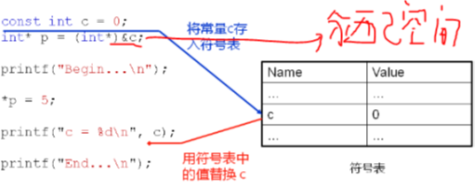

1，C 语言中的 const：
1，const 修饰的变量是只读的，本质还是变量；
1，C 语言中的 const 使变量具有只读属性；
2，const 只在编译期有用，在运行期无用；
3，const 修饰的局部变量在栈上分配空间；
1，可以有办法改变空间中的值，此时 const 修饰的值就改变了；
4，cosnt 修饰的全局变量在只读存储区分配空间；
1，const 将具有全局生命周期的变量存储于只读存储区；
2，如果修改了 const 修饰的全局变量，程序将产生崩溃，因为我们修改了只读存储器的内容；
5，const 修饰的变量不是真的常量，它只是告诉编译器该变量不能出现在赋值符号左边；
1，const 不能定义真正意义上的常量；
2，过了编译器，常量特性就没有了；
2，C 语言中可以定义真正意义上的常量，通过 enum 定义的标识符才是真正意义上 的常量，也就是说 C 语言中，真正意义上的常量只有枚举；
3，C/C++ 中的 const：
1，main.cpp 文件：
1 #include <stdio.h>
2
3 int main()
4 {
5 const int c = 0; // 只读变量，栈上分配空间，但不可以作为左值；
6 int* p = (int*)&c;
7
8 printf("Begin...\n");
9
10 *p = 5;
11
12 printf("c = %d\n", c); // C 编译器中 c = 5； C++ 编译器中 c = 0；
13
14 printf("*p = %d\n", *p); // C 编译器中 *p = 5； C++ 编译器中 *p = 5；
15
16 printf("End...\n");
17
18 return 0;
19 }
4，C++ 中的 const：
1，C++ 在 C 的基础上对const 进行了进化处理：
1，当碰见 const 声明时在符号表中放入常量；
2，编译过程中若发现使用常量则直接以符号表中的值替换；
3，编译过程中若发现下述情况则给对应的常量分配存储空间：
1，对 const 常量使用了 extern；
1，当前文件外部需要使用 const 常量时；
2，对 const 常量使用 & 操作符；
4，C++ 编译器虽然可能为 const 常量分配空间，但不会使用其存储空间 中的值；
1，这里是为了兼容 C 语言，之前通过 C 语言编译通过的语句,通过 C++ 也要编译通过，只不过可能程序执行的运行结果有可能 不同；
2，因为用 const 修饰变量，又用指针修改这个值，这样做是没有意义 的，所以 C++ 可以为 const 常量分配空间，但不会使用里面的值， 而是使用符号表里面的值；
2，见符号表：

1，符号表是编译器在编译过程中所产生的一张表，这张表是编译器内部的 数据结构；
5，C 和 C++ 中 const 修饰标识符的对比：
1，C 语言中的 const 变量（是变量）：
1，C 语言中的 const 变量是只读变量，会分配存储空间；
2，本质依旧是变量，而编译器不准它出现在符号左边；
2，C++ 中的 const 常量（是常量）：
1，可能分配存储空间（兼容 C）：
1，当 const 常量为全局，并且需要在其他文件中使用；
2，当使用 & 操作符对 const 常量取地址；
2，进入符号表，真正常量；
6，C++ 中的 const 常量类似于宏定义：
1，const int c = 5; ==>(about) #define c 5; ；
C++ 中的 const 常量在与宏定义不同：
1，const 常量由编译器处理；
2，编译器对 const 常量进行类型检查和作用域检查；
3，宏定义由预处理器处理，单纯的文本替换；
1，无类型和作用域检查；
7，const 与宏编程示例：
1，main.cpp 文件：
1 #include <stdio.h>
2
3 void f()
4 {
5 #define a 3
6 const int b = 4;
7 }
8
9 void g()
10 {
11 printf("a = %d\n", a); // 这里 C 和 C++ 中都没有报错，因为这接进行文本替换，没有类型检查；这里等价代码为：printf("a=%d\n",3); 这里没有作用域检查；
12 //printf("b = %d\n", b); // const 常量会做作用域检查，报错；
13 }
14
15 int main()
16 {
17 const int A = 1;
18 const int B = 2;
19 int array[A + B] = {0};//C中：A + B 是两个变量相加，其结果要到运行时才知道，因此不知道 array 数组大小，报错；C++ 中：A + B 是两个常量，不报错；
20 int i = 0;
21
22 for(i=0; i<(A + B); i++)
23 {
24 printf("array[%d] = %d\n", i, array[i]);
25 }
26
27 f();
28 g();
29
30 return 0;
31 }
8，小结：
1，与 C 语言不通，C++ 中的 const 不是只读变量；
2，C++ 中的 const 是一个真正意义上的常量；
3，C++ 编译器可能会为 const 常量非配空间；
4，C++ 完全兼容 C 语言中 const 常量的语法特性；